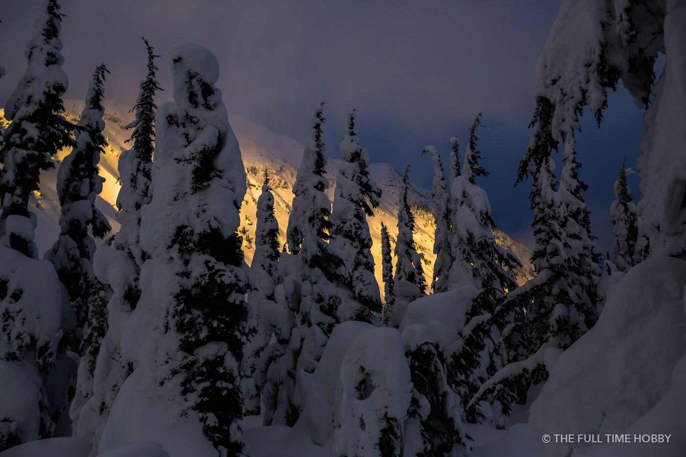
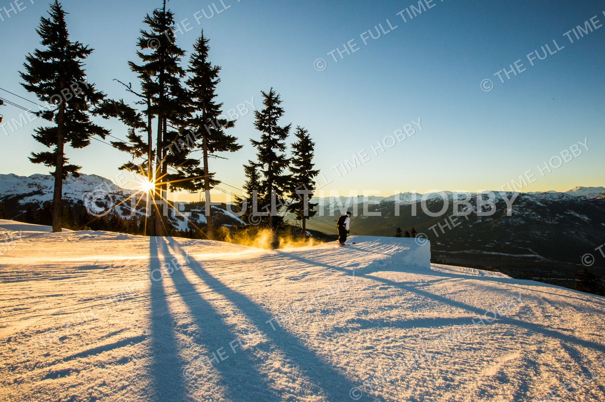
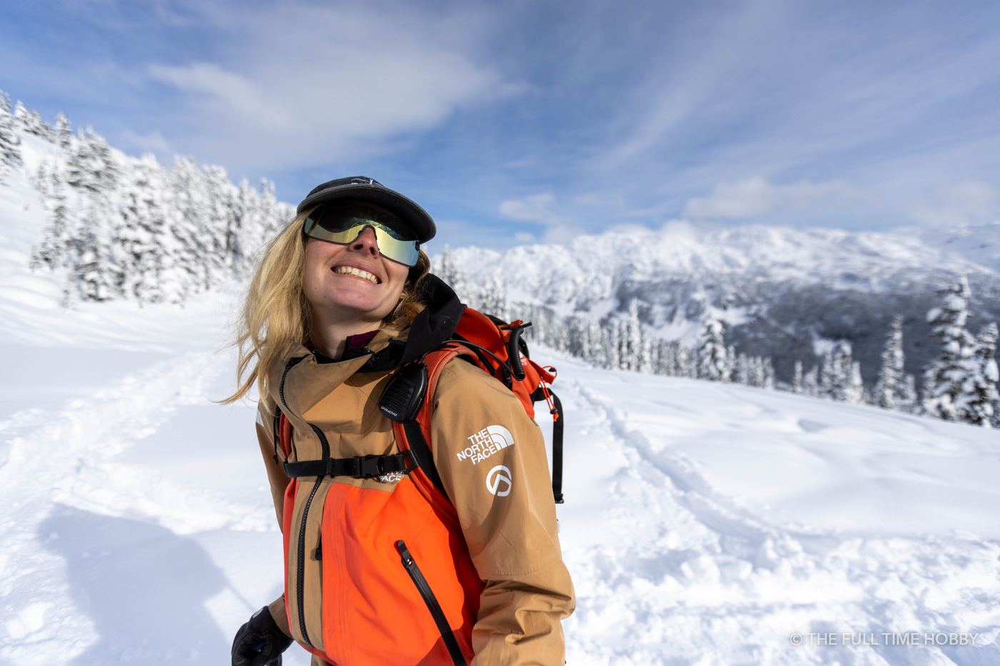
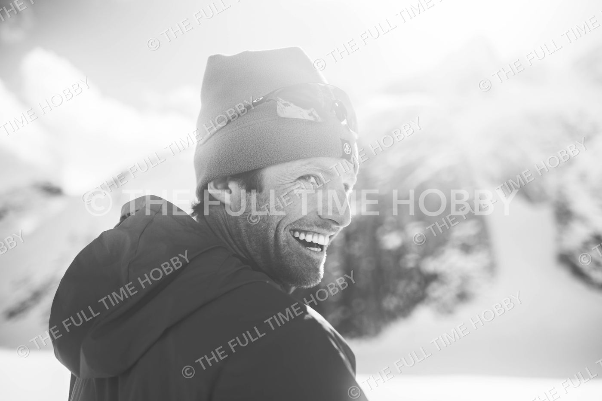
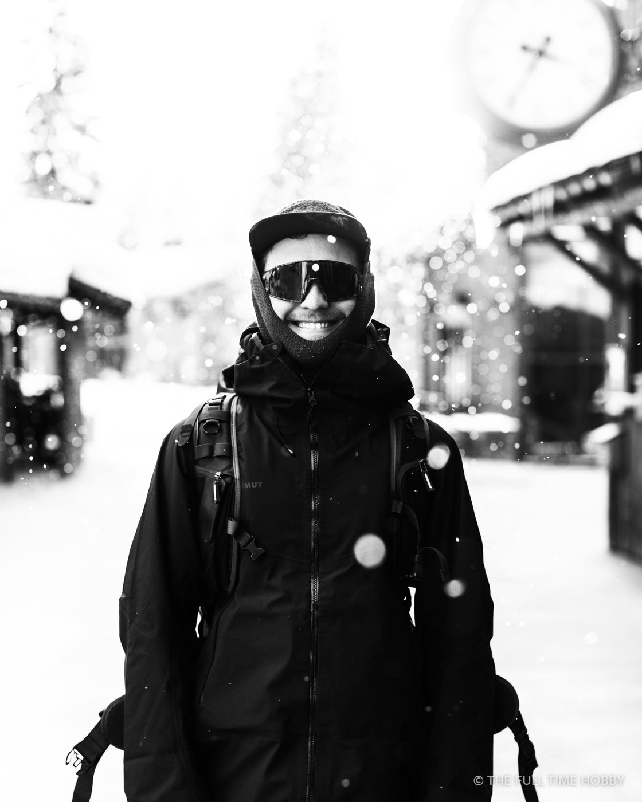

Expose for the snow, not for the camera
Your camera’s meter wants everything to average out to mid-grey, so a bright snowy scene comes out dull and grey. Dial in +1 to +2 stops of exposure compensation on a sunny day, then check the histogram rather than the screen. You want the snow pushed right up to the edge without the highlights blinking.
- Shoot RAW. Snow has subtle blue and gold tones that are easy to lose in a JPEG.
- Set a custom white balance or fix it later; shade on snow goes very blue.
- A polarizer deepens a blue sky, but go easy at altitude or it turns almost black.

Work with the short days
In December the sun sits low all day, which is a gift: you get long shadows and warm side light for hours instead of minutes. The trade-off is that the valleys lose the sun early. Plan your best shots for higher terrain in the afternoon, and know when the last lift down runs.
Photographing skiers and snowboarders
For action, 1/1000s or faster with continuous autofocus. Position yourself so the rider is turning toward you with the sun behind or beside you, and get low; a low angle makes a small jump look big and puts sky behind the rider instead of a busy slope.

- Colour matters. Bright jackets read beautifully against snow. Black and white outfits can disappear.
- Spray sells it. Ask riders to throw a turn just after fresh snowfall, with the light behind the spray.
- Safety first. Never stand below a jump or in the middle of a run. Stand where uphill riders can see you, and in the backcountry, only with avalanche training and gear.
Portraits on the hill
Some of my favourite winter photos aren’t action at all: they’re the grins at the top of the chair, goggles pushed up, snow in someone’s beard. Keep a mid-range zoom handy between runs. Real moments happen in the lift line, not when you ask someone to pose.


Keeping your gear alive in the cold
- Batteries: cold drains them fast. Carry spares in an inside pocket and swap them as they fade; a warmed-up battery often comes back to life.
- Condensation: when you come inside, leave the camera in a sealed bag or zipped camera bag until it warms up, so moisture doesn’t form inside the lens.
- Hands: thin liner gloves under mitts let you work the buttons without exposing bare skin.
- Snowfall: a lens hood and a rain cover keep flakes off the front element.
Gear for winter shoots
A weather-sealed body and a 70–200mm f/2.8 handle most on-hill action. If you need a sealed body or a fast telephoto for a trip, I rent camera gear in Squamish and Whistler.